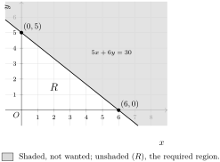
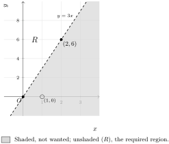
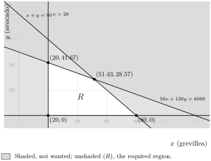
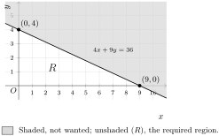
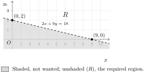
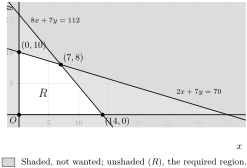
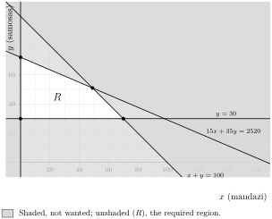
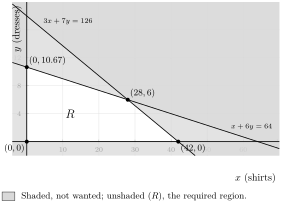
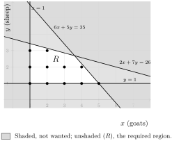
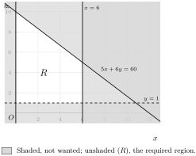

Curriculum Alignment
- Strand
-
1.0 Numbers and Algebra
- Sub-Strand
-
1.4 Linear Programming
- Specific Learning Outcomes
-
Represent linear inequalities on a cartesian plane



5x+6y<=30 and it shades a side of the line. Most programs shade the side that is wanted, the opposite of this chapter, so check which side it has shaded before you copy the picture, and say which in your key.
<= and \(\ge\) as >=, for example 4x+9y<=72. Give intercepts as exact values, for example 4.5.







11/2 or 5.5, and whole numbers for whole-number points.
![Runestone Academy logo]()
![MathJax logo]()